Destinations For Mountain Biking Adventures
Moab, Utah
Moab is renowned worldwide for its unique red rock landscapes and
offers some of the most iconic mountain biking trails. Popular trails
include the Slickrock Bike Trail, which challenges riders with its
steep climbs and technical descents over smooth sandstone, and the
Whole Enchilada, an epic trail that takes riders from alpine forests
to desert terrain. Moab’s stunning scenery, from arches and canyons to
rock formations, makes it a breathtaking backdrop for any adventure.
Best season to visit: Spring and fall, when temperatures are cooler,
making for an enjoyable riding experience.
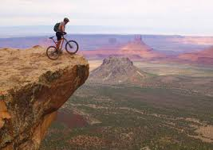
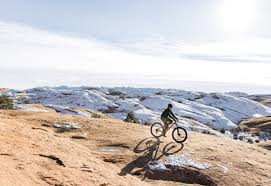

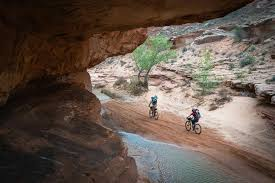
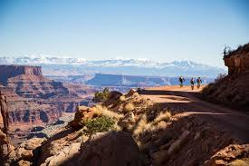
Whistler, Canada
Whistler, located in British Columbia, Canada, is home to one of the
world’s most famous mountain biking destinations: the Whistler Bike
Park. Known for its well-maintained trails and diversity, Whistler
offers everything from flowy beginner tracks to challenging, technical
descents for advanced riders. Beyond the park, Whistler’s surrounding
alpine trails offer breathtaking views and more secluded rides for
those looking to explore. Key attractions include A-Line, a flow trail
filled with jumps and berms, and Top of the World, which offers
panoramic views of the surrounding mountains. Best season to visit:
Summer, when the bike park is open from May to October.
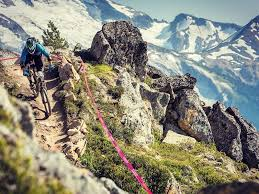
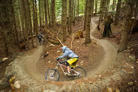
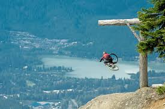
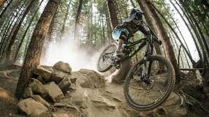
French Alps, France
The French Alps provide an exhilarating mountain biking experience
with high-altitude trails, stunning alpine landscapes, and thrilling
descents. Regions like Les Gets, Chamonix, and Morzine are popular
hubs for mountain biking, with an extensive network of trails that
cater to all skill levels. The area’s lift-accessed bike parks allow
riders to enjoy long downhill trails without extensive climbs. Scenic
highlights include views of Mont Blanc and the pristine alpine meadows
that dot the landscape. The Alps are also known for their cultural
charm, with nearby villages offering a cozy place to unwind after a
long day on the trails. Best season to visit: Summer, especially from
June to September, when lifts are open and trails are accessible.
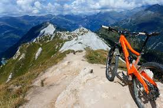
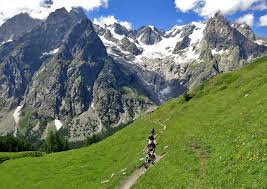
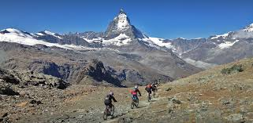
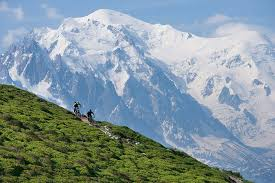
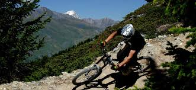
Queenstown, New Zealand
Queenstown, often called the adventure capital of the world, is a
paradise for mountain bikers, with trails that offer both breathtaking
views and thrilling challenges. Popular spots include the Queenstown
Bike Park, with its famous gondola-accessed trails that allow for long
downhill rides, and the Fernhill Loop, a scenic yet technical trail
that winds through lush native forest. The Skyline Rotorua Gravity
Park is also a favorite, offering a range of trails for all levels and
stunning views over Lake Wakatipu. Queenstown’s biking season is
during the Southern Hemisphere’s summer, from November to April,
making it a unique destination for those looking to escape winter
elsewhere. Best season to visit: Summer (November to April), when
trails are in optimal condition and the weather is warm.
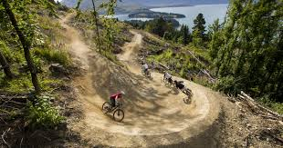
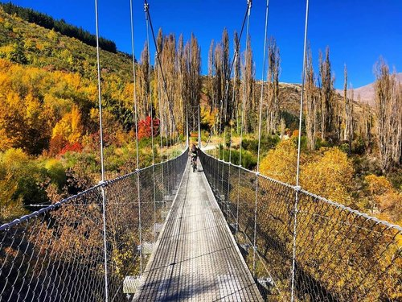
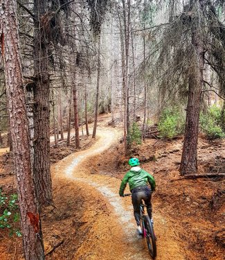
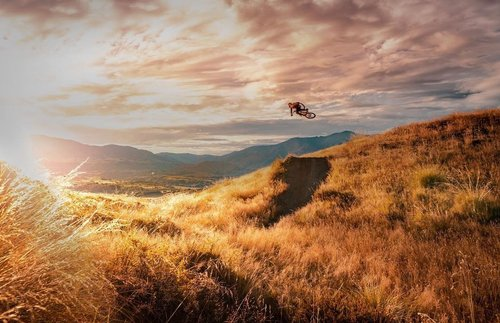
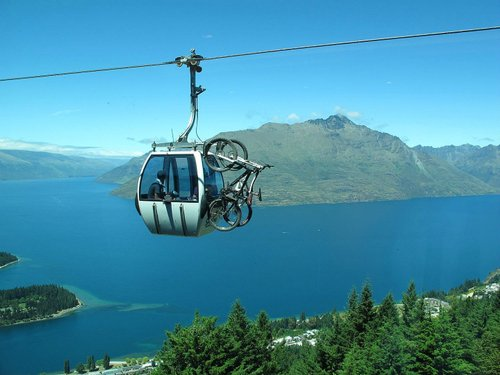